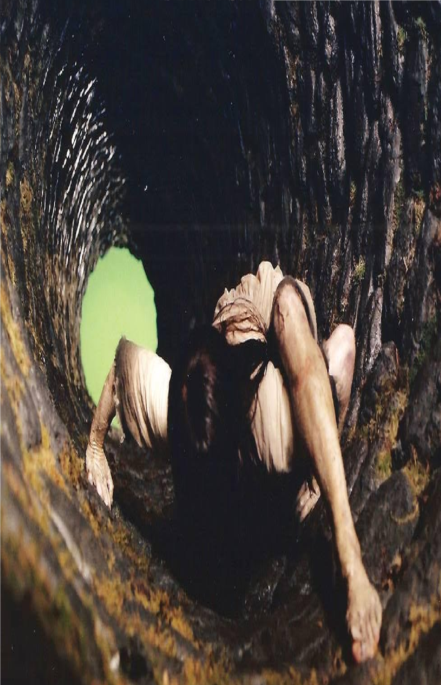

El niño del pozo
*Aclaración: Algunos microrrelatos son mios y otros son de internet, si alguno de esos es tuyo contactame para darte tus respectivos creditos.*
Hace muchos años en un viejo pueblo al norte del estado fue perforado un gran pozo. Con el tiempo se vació y dejo de funcionar. Un día dos pequeños que habitaban cerca del lugar desataron el secreto de aquél pozo.
—Ándale, vamos a jugar al pozo.
—No, acuerdate que mi mamá no nos deja porque dice que nos podemos caer.
—Tan grandote y tan miedoso.
Aquellos niños vivían con su madre la cual había enviudado no hace mucho. La familia tenía un vecino de nombre Fausto, era un tipo malo y avaricioso que se disfrazaba como una persona amable para pretender a la madre de los niños. Un día que los infantes salieron a jugar se encontraron con un sendero que conducía a un monte
Los niños guiados por su curiosidad siguieron aquel camino y al final se encontraron con el viejo pozo de roca. Aún tenía el torno con la cuerda y la cubeta con la que sacaban el agua.
Los niños comenzaron a jalar para sacar la cubeta de madera.
—Anda, jala con fuerza para ver que sacamos.
—Esta muy dura, esta todo oxidado.
El cubo por fin salió, y para su sorpresa había una escritura hecha al parecer con algo filoso entre la madera que decía: Tengo Hambre.
—Órale, mira lo que dice la cubeta.
—Sí, alguien vive abajo del pozo y tiene hambre.
—Vamos a la casa a traerle algo de comer.
Los niños sin importarles mucho quien había escrito la frase en la cubeta. fueron corriendo a su casa y regresaron con una pieza de pollo asado y lentamente lo bajaron hasta el fondo.
—El que vive abajo ahi te voy a dar algo pa'que comas.
—De seguro con esto se te quita el hambre.
A la mañana siguiente volvieron al pozo y encontraron una grata sorpresa. Al sacar la moneda esta llevaba una moneda de oro. Fausto el vecino que en todo estaba se había dado cuenta con extrañesa que al pasar los días los niños escondieron la comida para luego llevarsela al pozo. Así, una noche de luna llena Fausto no quiso quedarse con la duda, siguió a los niños dandose cuenta de que estos recogían una moneda de oro de la cubeta que sacaban del pozo.
Fausto: Canijos Chamacos, con que sacando oro del pozo y la gente diciendo que estaba embrujado, puros cuentos para que nadie se acercara. Esa misma noche, ya de madrugada, Fausto se encamino al pozo y a obscuras comenzó a bajar por la cuerda sin saber lo que se encontraría ahí dentro. (Se oyen ruidos de una bestia y Fausto comienza a gritar y pelear por su vida). Al otro día los niños regresaron al pozo, comenzaron a sacar la cubeta, solo que notaron que esta vez estaba más pesada que de costumbre. Al lograr sacarla, vieron que en la cubeta había una cantidad inimaginable de oro. Tambien encontraron ropa desgarrada llena de sangre que envolvía la cabeza de Fausto... y una nota hecha a rasguños en los palos de la cubeta que decía: Gracias por el alimento.
Al otro día los niños regresaron al pozo, comenzaron a sacar la cubeta, solo que notaron que esta vez estaba más pesada que de costumbre. Al lograr sacarla, vieron que en la cubeta había una cantidad inimaginable de oro. Tambien encontraron ropa desgarrada llena de sangre que envolvía la cabeza de Fausto... y una nota hecha a rasguños en los palos de la cubeta que decía: Gracias por el alimento.